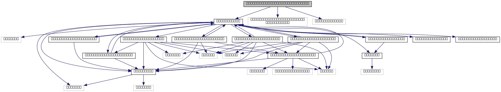

unary functions for thrust::transform_iterator More...
#include <cudf/cudf.h>#include <thrust/iterator/transform_iterator.h>#include <thrust/pair.h>
Include dependency graph for transform_unary_functions.cuh:

This graph shows which files directly or indirectly include this file:
Classes | |
| struct | cudf::meanvar< ElementType > |
| intermediate struct to calculate mean and variance This is an example case to output a struct from column input. More... | |
| struct | cudf::transformer_squared< ElementType > |
| Transforms a scalar by first casting to another type, and then squaring the result. More... | |
| struct | cudf::transformer_meanvar< ElementType > |
Uses a scalar value to construct a meanvar object. This transforms thrust::pair<ElementType, bool> into ResultType = meanvar<ElementType> form. More... | |
Namespaces | |
| cudf | |
| cuDF interfaces | |